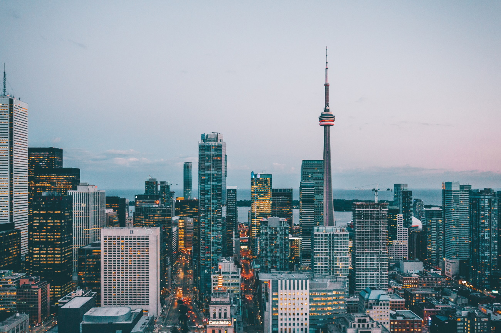
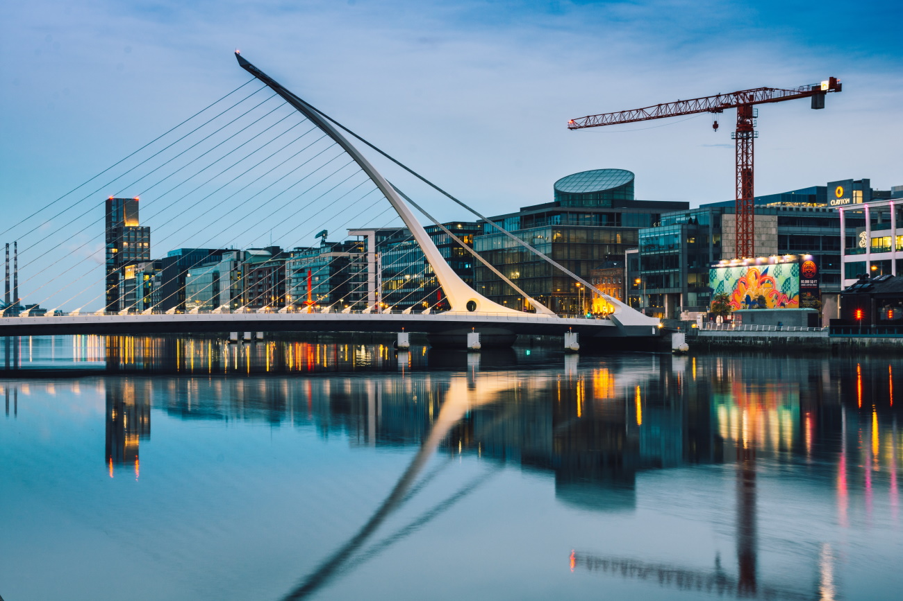
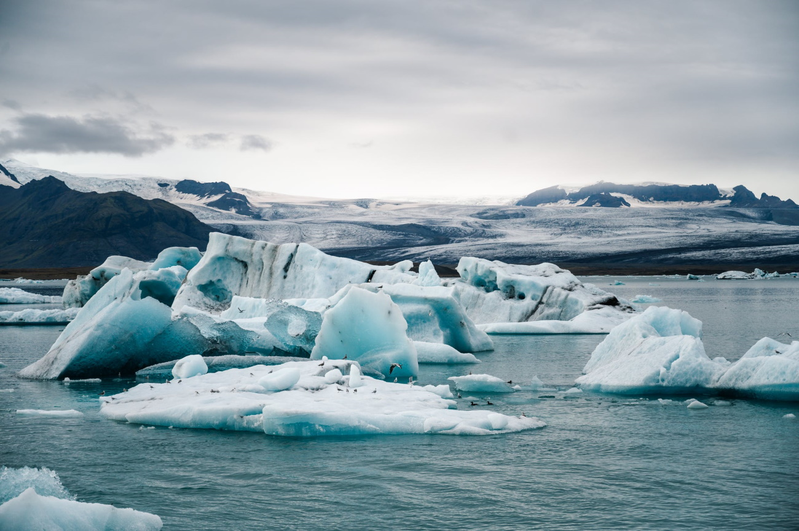

Wzorce na świecie
Silne państwo musi być innowacyjne i korzystać z rozwiązań, które będą inspiracją dla innych krajów świata. Nie oznacza to jednak, że sami nie możemy wzorować pewnych reform na tych, które ze skutecznością zostały wprowadzone gdzieś indziej. Poniżej jest kilka przykładów państw, które pokazały jak powinno się prowadzić politykę.
Kanada
Kanada to państwo z najlepszą reputacją ze wszystkich na świecie. Jednym słowem, ludzie uznają to państwo jako raj na ziemi. No i jak się zastanowimy, wcale nie są daleko od prawdy.
Bardzo silna wolnorynkowość łączy się tam z rozsądną polityką socjalną, która służy społeczeństwu, a nie je psuje. Legalna jest marihuana oraz broń, a związki partnerskie uznawane od dawna.
Mieszkańcy kraju są znani z tolerancji i życzliwości, natomiast urzędy w przeciwieństwie do naszych są pomocne i przyjazne. Wysokie zarobki sprawiają, że większość ludzi żyje dostatnie.
Chcemy, aby tak jak Kanada, nasze państwo przodowało w rankingach przyjaznych państw zarówno dla imigrantów, jak i własnych obywateli. Jeżeli mielibyśmy wskazać kraj, którym chcemy inspirować się najbardziej, będzie to właśnie Kanada.
Toronto - serce gospodarcze Kanady
Szwajcaria
W kraju bardzo mocno zakorzenione są idee demokratyczne, a samo państwo jest doskonale zarządzane. Szwajcaria jest federacją, a same kantony, z których się składa posiadają szeroką autonomię.
Obywatele mają duży wpływa na rządzenie państwem m.in. poprzez referenda.
Podatki nie są wysokie, a ingerencja rządu w gospodarkę jest praktycznie zerowa. Rząd natomiast jest niewielki i służy głównie do obrony wolności swoich obywateli.
Nowa Zelandia
Na pierwszy rzut oka Nowa Zeladndia to piękny, ale odosobniony archipelag na drugim końcu świata. Prawda jest jednak taka, że nowozelandczycy mają jedną z najwolniejszych (wg. danych na rok 2021 - drugą) gospodarkę na świecie. Przodują również w rankingach wolności społecznej.
Irlandia
Irlandia to kraj cudu gospodarczego. Jeszcze kilkanaście lat temu nikt nie pomyślał, że ta niewielka wyspa stanie się tak znaczączym państwem.
Inspirując się ich działaniami, chcemy ułatwić przedsiębiorcom zatrudnianie pracowników, co poskutkuje zarówno wyższym zatrudnieniem, jak i pensjami. Ułatwienia w inwestowaniu natomiast, zachęcą firmy do budowania w Polsce fabryk i biurowców.
Ostatnim krokiem, który wykonali jest otwarcie się na imigracje zarobkową. Czemu by nie spróbować? My też możemy stać się zieloną wyspą Europy!
Samuel Beckett Bridge - Dublin, Irlandia
Tajwan
Jest to jedna z najbardziej liberalnych gospodarek całego świata (trzecia, a nie licząc mikropaństw jak Singapur, pierwsza w całej Azji). Wolny rynek pozwolił temu państwu bogacić się tak szybko, że wyspa 9-krotnie mniejsza od polski dorównała jej wielkością PKB. Posiadają również 6 największe rezerwy walutowe na świecie, a dług publiczny jest mniejszy niż nasz. Szczególnie rozwinięty jest tu handel, również ten uliczny, a sam kraj opiera się głównie na małych i średnich przedsiębiorstwach.
Islandia
O ile stawki podatkowe są na wysokim poziomie, to jakości służby zdrowia czy niskiej korupcji możemy Islandczykom jedynie pozazdrościć. Jak to przystało na kraje nordyckie, jest to kraj bardzo tolerancyjny i przyjazny ludziom. Jest to naprawdę magiczne miejsce, które z najbardziej nieprzyjaznej człowiekowi wyspy Europy, stało się rajem północy.
Islandia to jedno z najzimniejszych państw świata, a jednak stała się rajem
Polska
Tak dla beki se tu jest
Polsce jeszcze wiele brakuje do stania się naprawdę rozwiniętym państwem